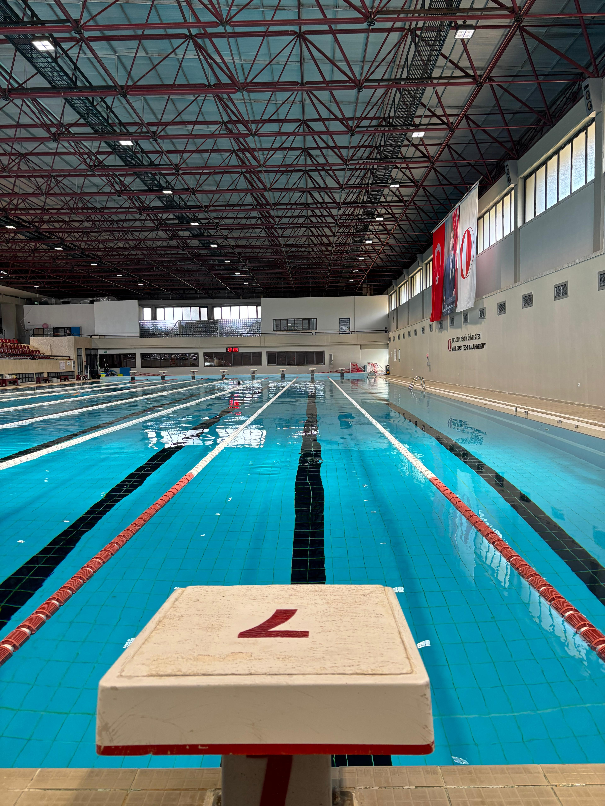
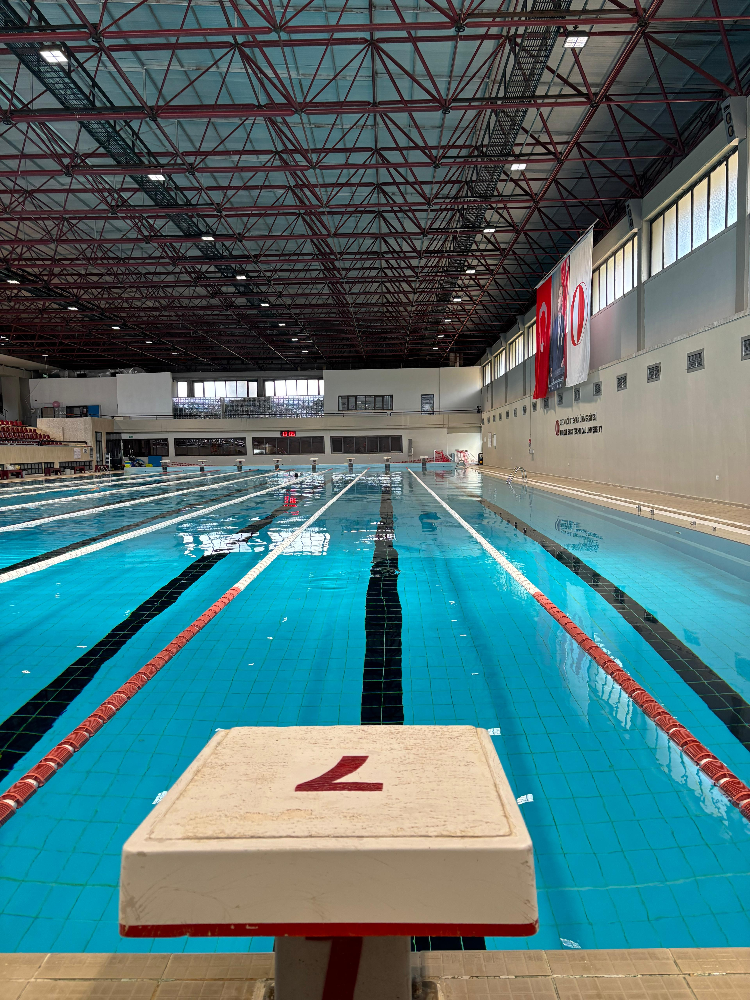

Swimming
 

Image 1 of 3
Swimming is my meditation. The rhythmic sound of water and the focus on breathing clear my mind like nothing else. It’s not just about physical endurance; it’s about finding a flow state.
I enjoy both open water and pool swimming. Each stroke brings me closer to my Ironman goal, building the stamina and strength required for the intense swimming leg of the race.